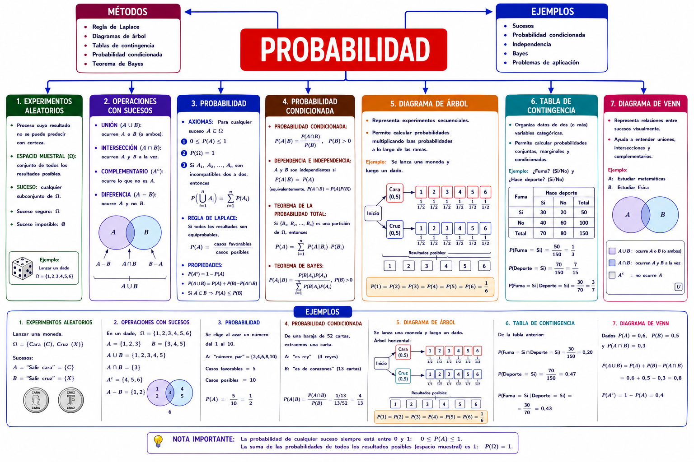

Desde lanzar una moneda hasta decidir un tratamiento médico: la probabilidad es la herramienta que usamos para razonar con rigor cuando no podemos predecir el resultado con certeza. Aprende a modelar, calcular y combinar sucesos — con teoría, ejemplos y práctica en cada bloque.
Vas a lanzar un dado. No puedes saber con certeza qué número saldrá... pero tampoco es pura magia: sabes que hay 6 resultados posibles, que cada uno es igual de probable, y que "sacar un número par" es más fácil que "sacar exactamente un 6".
¿Cómo formalizamos esa intuición? ¿Cómo pasamos de "no lo sé con certeza" a "puedo calcular exactamente cuánto de probable es"?
Así se relacionan todos los bloques del tema. Guárdatelo como referencia — haz clic para ampliarlo.

Cada bloque combina teoría, ejemplos resueltos y práctica libre. Empieza siempre por la introducción. Las formativas de cada bloque se hacen en tu panel.
Experimento aleatorio, espacio muestral, sucesos, tipos de sucesos y operaciones entre ellos.
Entrar →Regla de Laplace, definición axiomática y propiedades respecto a las operaciones.
Entrar →Formas de representar los datos para calcular probabilidades.
Entrar →Nomenclatura, fórmula, sucesos independientes y su relación con la incompatibilidad.
Entrar →Sistema completo de sucesos, diagrama de árbol y el camino inverso con Bayes.
Entrar →Entra con tu contraseña para hacer la Parte 1 · Teoría y la Parte 2 · Aplicación de cada bloque, practicar lo que te cuesta y ver cómo avanzas.
Ir a mi panel →10 tarjetas mezclando los 5 bloques del tema, para repasar de un vistazo.
Entrar →